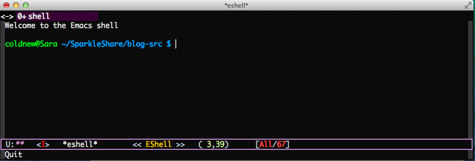

eshell 是 emacs 下一個非常特殊的終端機 (terminal) 模擬軟體，和一般的 xterm、konsole、gnome terminal 相比，eshell 完全使用 emacs-lisp 實現，因 此可以非常完整的和 emacs 結合。
若任何軟體都要舉出其缺點的話，eshell 我覺得有以下兩個缺點:
不能夠使用 ncurse 的軟體
像是 htop 等使用到 ncurse 的軟體，很可惜無法在 eshell 中使用。
預設的 terminal prompt 太醜
身為 Gentoo Linux 的使用者，對於 shell prompt 的外觀是非常講究的，預設的 eshell prompt 沒有色彩，這點讓我難以接受。
為了讓 eshell 更貼近我的日常使用，我使用 emacs-lisp 修改 eshell 的 prompt 樣式，並讓他增加色彩，結果如下圖:

要讓你的 eshell 長得像我這樣，你必須使用以下兩組 emacs-lisp 設定
將 eshell 的 prompt 設定成和 bash 一樣
下面這一組 emacs-lisp 可以讓你的 eshell prompt 設定的和 bash 相同，變成 user@hostname directory $ 的形式。
(setq eshell-prompt-function '(lambda () (concat user-login-name "@" system-name " " (if (search (directory-file-name (expand-file-name (getenv "HOME"))) (eshell/pwd)) (replace-regexp-in-string (expand-file-name (getenv "HOME")) "~" (eshell/pwd)) (eshell/pwd)) (if (= (user-uid) 0) " # " " $ "))))
替 eshell 的 prompt 上色
設定好 eshell 的 prompt 後，接著就是透過 emacs-lisp 的正規表達式以及 overlay 功能，尋找符合的格式進行上色。透過這兩個步驟，你也可以擁有好看的 eshell prompt。
(defun colorfy-eshell-prompt () "Colorfy eshell prompt according to `user@hostname' regexp." (let* ((mpoint) (user-string-regexp (concat "^" user-login-name "@" system-name))) (save-excursion (goto-char (point-min)) (while (re-search-forward (concat user-string-regexp ".*[$#]") (point-max) t) (setq mpoint (point)) (overlay-put (make-overlay (point-at-bol) mpoint) 'face '(:foreground "dodger blue"))) (goto-char (point-min)) (while (re-search-forward user-string-regexp (point-max) t) (setq mpoint (point)) (overlay-put (make-overlay (point-at-bol) mpoint) 'face '(:foreground "green3")) )))) ;; Make eshell prompt more colorful (add-hook 'eshell-output-filter-functions 'colorfy-eshell-prompt)